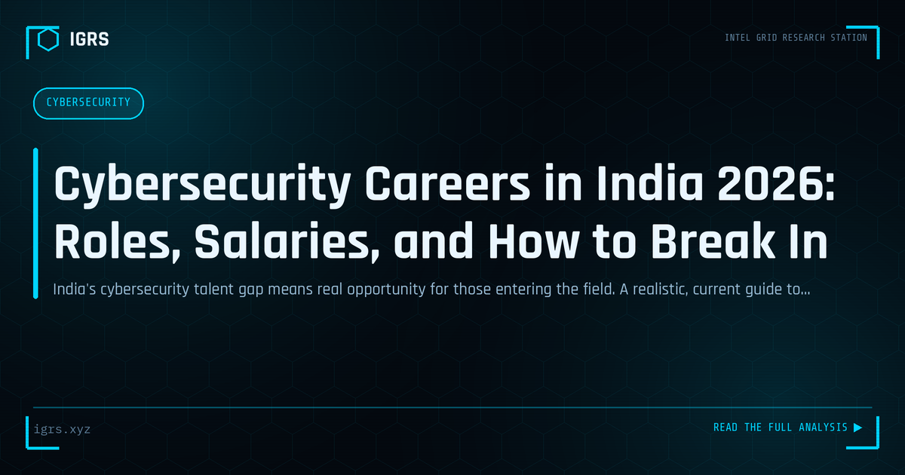

Cybersecurity Careers in India 2026: Roles, Salaries, and How to Break In
| File No. | IGRS-058/2026 |
| Subject | Current guide to cybersecurity career opportunities, compensation, and entry pathways in India |
| Category | Careers |
| Author | Manuj Kumar Pandey |
| Published | 2026-05-30 |
| Reading time | 12 minutes |
India's cybersecurity talent gap means real opportunity for those entering the field. A realistic, current guide to roles, salaries, certifications, and how to get your first job.
Building a Cybersecurity Career in India
Cybersecurity is among the fastest-growing and most in-demand fields in India, offering strong career prospects across investigation, defence, and intelligence roles. For students and professionals looking to enter or advance in the field, understanding the paths, skills, and qualifications that matter is essential. This guide maps the cybersecurity career landscape in India for 2026.
Why Cybersecurity Offers Strong Prospects
India faces a significant cybersecurity skills shortage even as digital adoption and cyber threats accelerate. This gap creates strong demand for skilled professionals across the public and private sectors — in enterprises, government, law enforcement, banks, and security firms. The combination of rising threats, regulatory requirements like the DPDP Act, and digital transformation means cybersecurity careers offer growth, stability, and impact.
Career Paths in Cybersecurity
| Path | Focus |
|---|---|
| Security analyst / SOC | Monitoring and incident response |
| Penetration tester | Offensive security testing |
| Digital forensics | Investigation and evidence |
| OSINT / threat intel | Intelligence and investigation |
| Security engineering | Building secure systems |
Foundational Skills
A cybersecurity career is built on technical foundations: networking, operating systems (especially Linux), and an understanding of how systems and applications work. On top of this, specialised skills develop — security tools, scripting and automation, and domain expertise in chosen areas. Equally important are analytical thinking, attention to detail, and the investigative mindset that turns data into understanding. These foundations support every specialisation.
Certifications That Matter
Certifications validate skills and aid career progression. Foundational certifications establish credibility, while specialised ones — in ethical hacking, forensics, incident response, and offensive security — demonstrate domain expertise. Widely recognised certifications include those focused on penetration testing, forensic analysis, and security operations. The right certifications depend on the chosen path, but they help candidates stand out and progress, particularly early in a career.
The OSINT and Investigation Path
For those drawn to investigation, OSINT and digital forensics offer compelling careers serving law enforcement, intelligence units, corporate security, and consulting. These roles combine technical skill with investigative thinking — correlating data, building evidence chains, and reaching defensible conclusions. In India, demand for investigators who understand both the technology and the legal framework (BNS, BNSS, BSA, IT Act, DPDP) is strong and growing, making this a rewarding specialisation.
Gaining Practical Experience
Skills are best demonstrated through practice. Building a home lab, participating in capture-the-flag (CTF) competitions, contributing to the security community, completing OSINT challenges, and building a portfolio all develop and demonstrate capability. Practical experience often matters more than credentials alone — employers value candidates who can actually do the work, and hands-on projects provide both learning and evidence of skill.
Launching and Advancing Your Career
For aspiring Indian cybersecurity professionals, the path combines building technical foundations, gaining practical experience, earning relevant certifications, and specialising in an area of interest. Continuous learning is essential in a field that evolves constantly. With strong demand, diverse paths, and significant impact — protecting organisations, supporting investigations, and defending India's digital infrastructure — cybersecurity offers one of the most promising career landscapes available today. Those who combine genuine skill, practical experience, and an understanding of the Indian context will find abundant opportunity in this growing field.